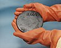

uranium

Definition: Uranium is a chemical element with symbol U and atomic number 92. It is a silvery-grey metal in the actinide series of the periodic table. A uranium atom has 92 protons and 92 electrons, of which 6 are valence electrons. Uranium radioactively decays by emitting an alpha particle. The half-life of this decay varies between 159,200 and 4.5 billion years for different isotopes, making them useful for dating the age of the Earth. The most common isotopes in natural uranium are uranium-238 (which has 146 neutrons and accounts for over 99% of uranium on Earth) and uranium-235 (which has 143 neutrons). Uranium has the highest atomic weight of the primordially occurring elements. Its density is about 70% higher than that of lead, and slightly lower than that of gold or tungsten. It occurs naturally in low concentrations of a few parts per million in soil, rock and water, and is commercially extracted from uranium-bearing minerals such as uraninite.Many contemporary uses of uranium exploit its unique nuclear properties. Uranium-235 is the only naturally occurring fissile isotope, which makes it widely used in nuclear power plants and nuclear weapons. However, because of the tiny concentrations found in nature, uranium needs to undergo enrichment so that enough uranium-235 is present. Uranium-238 is fissionable by fast neutrons, and is fertile, meaning it can be transmuted to fissile plutonium-239 in a nuclear reactor. Another fissile isotope, uranium-233, can be produced from natural thorium and is studied for future industrial use in nuclear technology. Uranium-238 has a small probability for spontaneous fission or even induced fission with fast neutrons; uranium-235, and to a lesser degree uranium-233, have a much higher fission cross-section for slow neutrons. In sufficient concentration, these isotopes maintain a sustained nuclear chain reaction. This generates the heat in nuclear power reactors, and produces the fissile material for nuclear weapons. Depleted uranium (238U) is used in kinetic energy penetrators and armor plating.The 1789 discovery of uranium in the mineral pitchblende is credited to Martin Heinrich Klaproth, who named the new element after the recently discovered planet Uranus. Eugène-Melchior Péligot was the first person to isolate the metal and its radioactive properties were discovered in 1896 by Henri Becquerel. Research by Otto Hahn, Lise Meitner, Enrico Fermi and others, such as J. Robert Oppenheimer starting in 1934 led to its use as a fuel in the nuclear power industry and in Little Boy, the first nuclear weapon used in war. An ensuing arms race during the Cold War between the United States and the Soviet Union produced tens of thousands of nuclear weapons that used uranium metal and uranium-derived plutonium-239. Dismantling of these weapons and related nuclear facilities is carried out within various nuclear disarmament programs and costs billions of dollars. Weapon-grade uranium obtained from nuclear weapons is diluted with uranium-238 and reused as fuel for nuclear reactors. The development and deployment of these nuclear reactors continue on a global base as they are powerful sources of CO2-free energy. Spent nuclear fuel forms radioactive waste, which mostly consists of uranium-238 and poses significant health threat and environmental impact.
Source: Wikipedia
Wikipedia Page (Something wrong with this association? Let us know.)
Wikidata Page (Something wrong with this association? Let us know.)